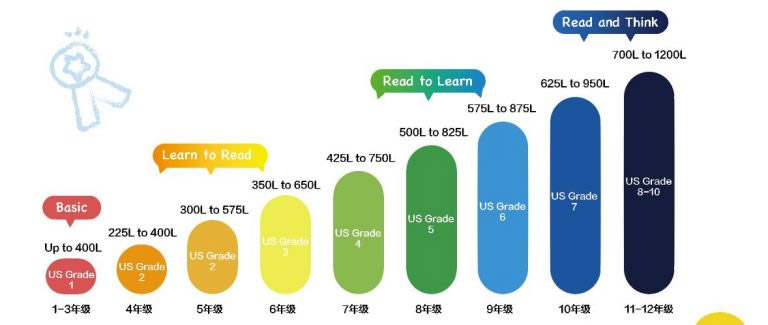

【晟睿新闻】走进国际学校，你必须知道蓝思lexile分级阅读的重要性
来源：晟睿整理 发表日期：2017-07-11 14:13 浏览次数：1,316
关键字：lexile分级阅读 国际学校 晟睿教育 蓝思阅读
越来越多的家长计划把孩子送入国际学校，由于目前国际学校招生要求高，数量少，使得不少家长选择在报考国际学校前参与相关英语能力衔接课程。希望孩子能够如愿考入心仪的学校并且能够顺利展开国际学校内的全英语授课课程。
作为美国蓝思(Lee)分级阅读官方合作伙伴晟睿教育，不断研发行之有效的国际学校英文能力衔接课程，并且将蓝思分级阅读的素质教育概念植入课堂中。
2017年6月，晟睿教育针对目前校内的200名79年级的学生做了Lexe(蓝思指数)测评。数据显示目前中国学生英文阅读能力比美国同龄学生低至两到三个年级。而大多数孩子在未来的几年之后即将出国深造，与国外的学生们享受同等水平的教育。
当前如此巨大的差距，很难想象中国学生出国之后将面临什么样的压力。
那么，先来普及一下什么是 Lexile(蓝思指数)。一个你绝对不容忽视的英文阅读水平测评标准住Lexile(蓝思指数)是有美国科学基金会为提高美国学生的阅读能力而硏究岀的一种衡量学玍阅读水平和标识书籍难易程度的标准。蓝思指数的范围是最低200L，最高1700L。
在美国，每年有3000万以上的学生通过" Lexile蓝思指数来獨量自己的阅读水平。同时，美国21个州的公立学校也将" Lexile蓝思指数”运用到期末评价(学校成绩单)中。
各阶段阅读学习目标详细说明
1. Basic
本阶段阅读学习目标为了解掌握 Sight Words为主的英文入门基础词汇，是从绘本到分级读物的过渡。
2. Learn to Read
本阶段开始为自主阅读打基础。学习目标为学生在教师指导下可以阅读难度较低的简版( Abridged)读物，实现对自己能力范围内的分级读物进行自主阅读。
3. Read to Learn
除了适合自己能力范围的分级读物( Leveled Readers5)，学生也可以阅读一些原版章节书( Chapter book/令本阶段是自主阅读能力养成的关键期。学生需在本阶段养成自主阅读的习惯，并可以从读物中获取、筛选有效
4. Read and Th
本阶段是学生进入大学、开始学术生涯之前的阅读攻坚阶段。学生应该在此阶段具备一定的文学鉴赏能力。同时，应形成批判性思维，在阅读多种材料后形成自己独特的见解；同时，阅读效率可以应对大学学术生涯和工作环境里大量的阅读需求。